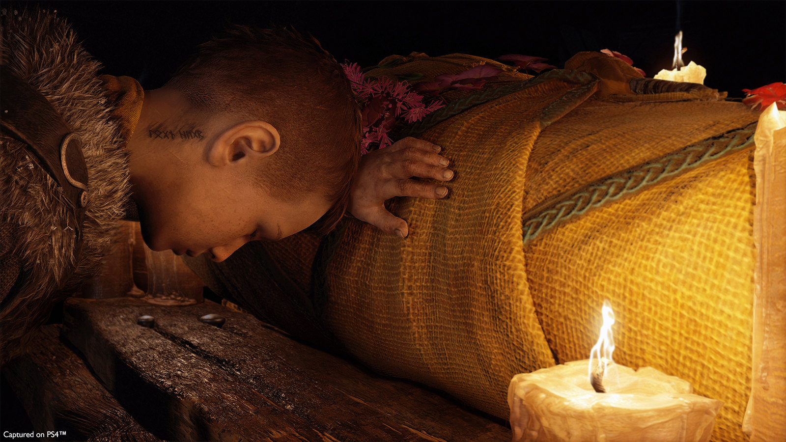
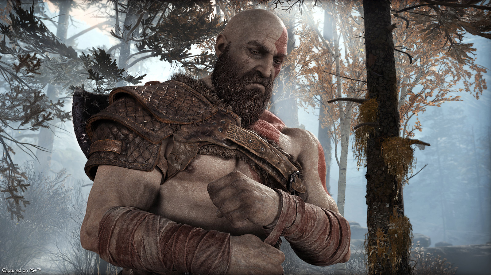
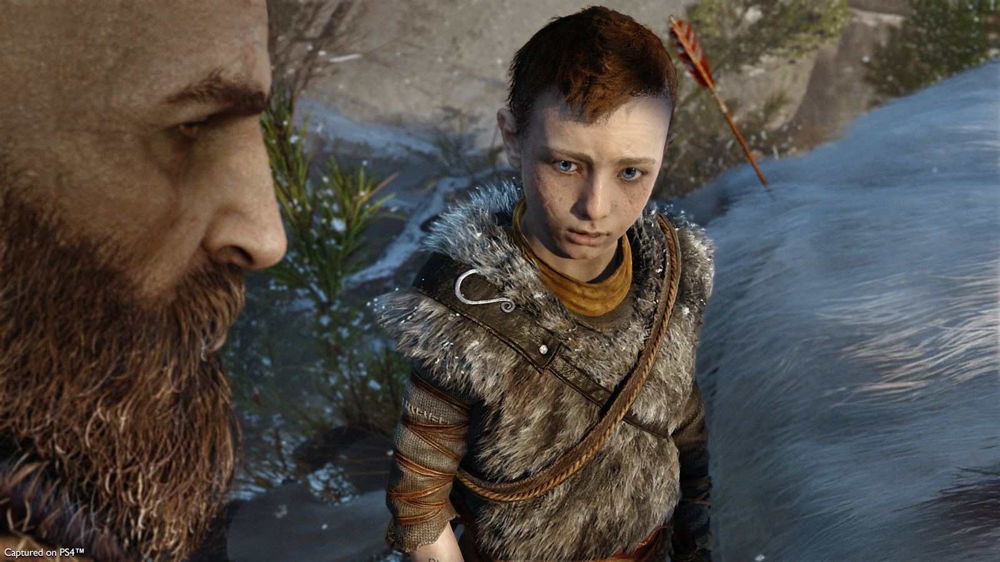
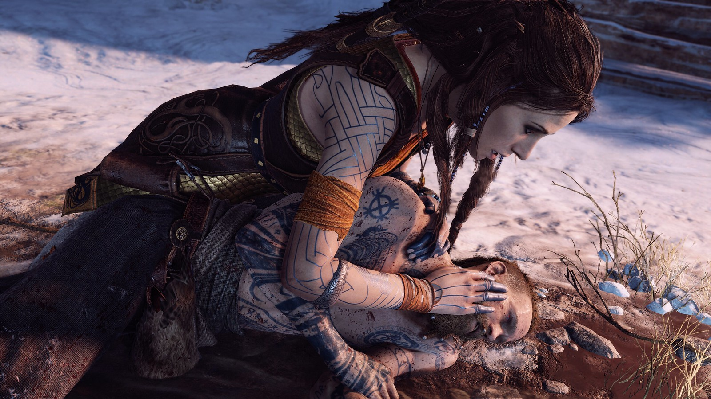

Our story begins with an end, the funeral of Faye - mother to Atreus and wife of Kratos. Her last wish imparted to her family is to scatter her ashes on the highest peak in all the realms. This request begins a journey that forces father and son to work together as they face the dangerous Norse wilds filled with beasts, monsters, and less-than-friendly gods.
Kratos, despite trying to leave his bloody past as the Ghost of Sparta behind, is still haunted by the man - the god - he was. His relationship with Atreus has been distant, stern, and disciplined. Now coping with the death of his wife, Kratos must learn to be the father that his son needs so they can both survive their journey across distant realms to lay Faye to rest.
Atreus is a young boy dealing with the sudden loss of his mother and a cold, distant father. Despite being sickly as a child and only very recently recovering enough to travel, Atreus wants nothing more than to fulfill his mother's final wish and prove to his father that he is strong. Having been taught by Faye how to use a bow and hunt, Atreus hopes that he can show Kratos he will be an asset on their journey and that he is no longer the frail boy he used to be.
After the funeral of Faye, Kratos and Atreus are visited by a mysterious stranger - one who seems intent on picking a fight with the legendary God of War from a distant land. Baldur says he is sent by Odin to investigate the home and its residents, indicating that perhaps he, and the rest of the Norse Gods, are much more aware of Kratos' past than even his own son.

They clash, tearing through the earth and rock surrounding the home in a bloody brawl that reveals Baldur has lost the ability to feel anything - impervious to pain and pleasure alike. Though the battle is close, Kratos is able to harness his rage and finally beats Baldur into submission. While he has rid them of the immediate threat, Kratos realizes that his home, and his son, are no longer safe. They must make the journey now - whether Atreus is ready for it or not.
Along their journey, the trio are ambushed by the two men they saw accompanying Baldur, Magni and Modi. They battle Kratos and Atreus fiercely, though Kratos is able to strike a killing blow on Magni.

Modi flees, but later finds the pair again. By killing Kratos, he hopes to regain his honor and prove that he is worthy of Thor's legacy. Modi subdues Kratos, but seeing his father in peril, Atreus instinctively triggers what appears to be his own Spartan Rage ability.
Not knowing his own godhood, Atreus is overwhelmed by the sudden surge and falls unconscious, his childhood illness seemingly returned and worse than ever. Kratos fends off Modi, who quickly departs knowing his life is in danger. Seeing that Atreus is barely alive, Kratos takes his son to Freya in the hopes her magic can help save his son.
They fight again, but through their shared strength, Kratos and Atreus are finally able to beat the newly vulnerable Baldur, who demands they kill him and end his life while he is still able to feel. Freya pleads with them to spare her only son, and Kratos relents - knowing all too well the pain a parent feels at losing a child.
As they turn to leave, Baldur uses his remaining strength to try and strangle Freya as payment for his years of numb torment. Freya accepts her death, hoping it will give her son some semblance of peace in his life to know she's gone.
Kratos, seeing his own bloody mistakes about to be repeated by Baldur, steps in to save Freya's life by killing her son. Unable to accept his death, Freya cradles the dead body of Baldur while swearing vengeance upon Kratos for taking away her only child, even if it meant that she would live.
Finally able to make the journey to Jötunheim with the help of Mimir's Bifröst eyes, Kratos and Atreus reach a Giant temple - one that has their entire journey carved into the walls. The Giants had seen what would come to pass, as well as what had come before.
They discover that this was all left for them by Faye, who was a Giant herself - a secret she had kept from her husband and son. Atreus finally uncovers the full truth of his heritage, that he is not only part god and part mortal, he is part Giant as well.
Atreus had two names, one was given to him by his father and the other, his mother. The name Faye had bestowed upon him was Loki.
Together Kratos and Atreus scatter the ashes on the peak of Jötunheim, finally fulfilling their quest.